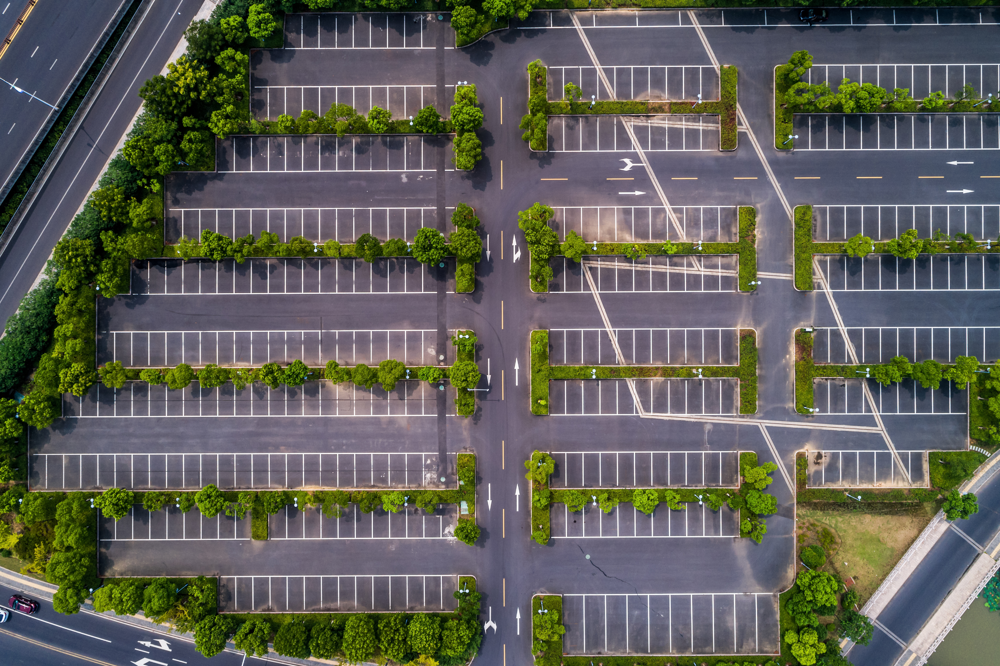
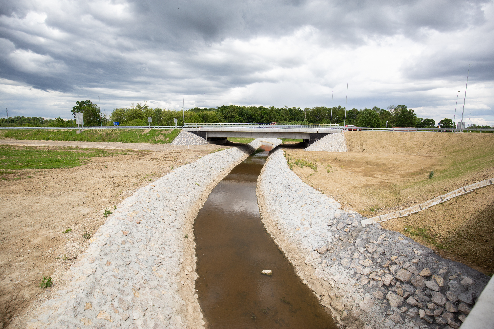
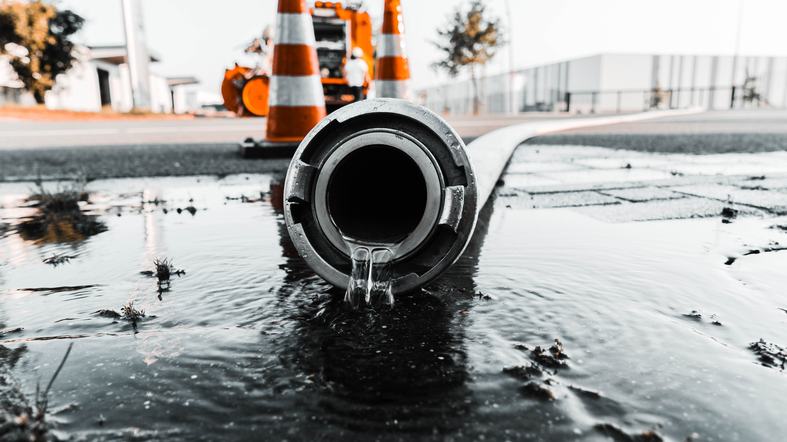
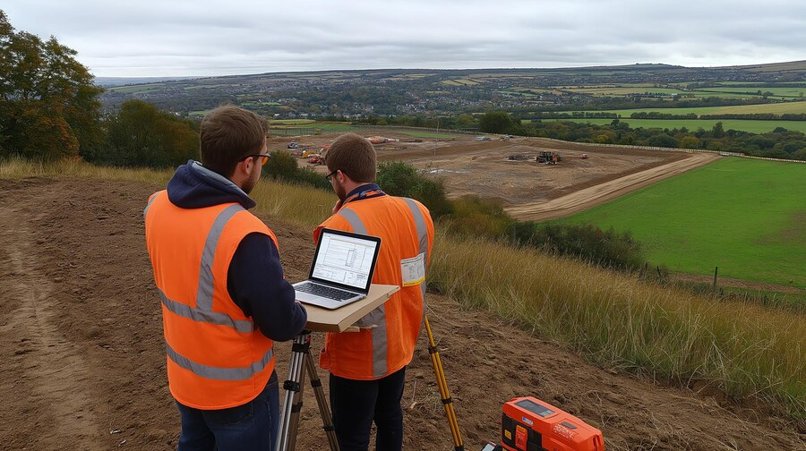
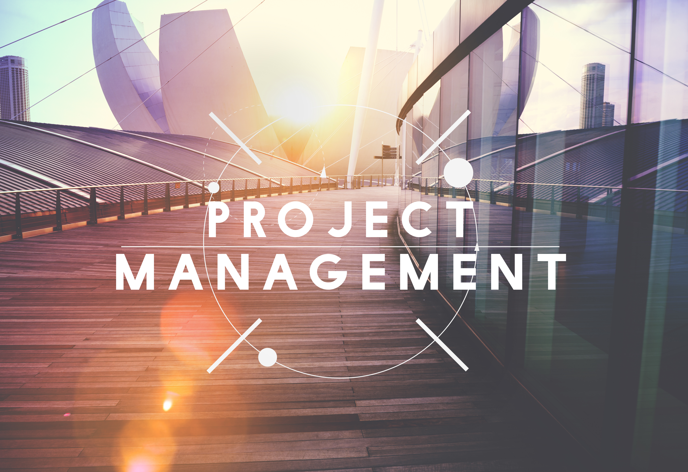
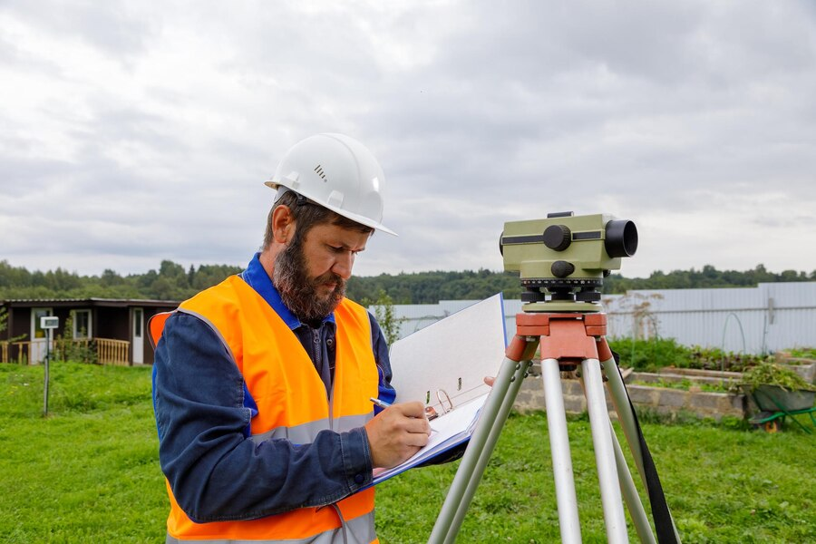

Land Development
Land development is the critical first step in creating successful real estate ventures. We specialize in transforming undeveloped or underutilized sites into fully prepared, investment-ready properties. ...

Greenhouse Developments
We provide comprehensive civil consulting services to support the successful development of modern greenhouse facilities. ...

Commercial & Industrial Engineering
We provide comprehensive civil engineering consulting for commercial and industrial projects, collaborating closely with architects and mechanical engineers to deliver integrated site planning.... ...

Municipal Engineering
As civil consulting engineers, we specialize in municipal engineering—delivering essential infrastructure solutions that support thriving communities... ...

Stormwater Management
Our civil engineering team provides expert stormwater management solutions for residential, commercial, industrial, and municipal projects. We perform detailed site assessments to design effective drainage systems,... ...
Sanitary Sewer Analysis
Our team conducts detailed hydraulic and hydrologic evaluations of sanitary sewer networks to assess system capacity and performance under varying flow conditions.... ...

Water Demand Analysis
We perform detailed water demand analyses to evaluate hydraulic capacity and ensure reliable water distribution systems... ...

Functional Servicing Studies
We prepare detailed functional servicing studies and reports to evaluate the feasibility and design of site servicing for proposed developments... ...

Project Management
We provide project management services specialized in civil land development, overseeing all phases from initial planning through construction completion... ...

Surveying & Construction Inspection
Our team provides topographic and legal surveying, construction layout...

Tender Preparation & Evaluation
We provide expert support in preparing tender documents that clearly define project specifications, scope, and performance criteria... ...
Drainage & Floodplain Modeling
Our civil engineering team provides in-depth drainage and floodplain modelling services to accurately evaluate surface water runoff, drainage patterns, and flood risks across various site conditions... ...